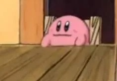
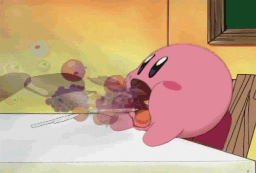
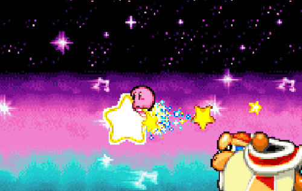
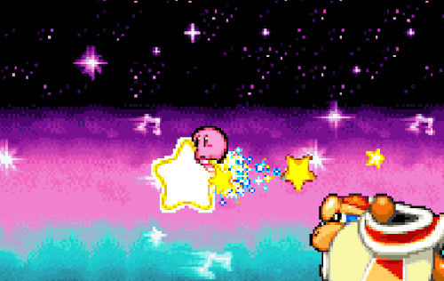

Kirby Media Hub
Explore fun facts, news and more about the Kirby series!

🎠Fun Facts About Kirby
- Kirby was originally a placeholder sprite named "Popopo".
- Masahiro Sakurai, the creator of Kirby, also created Super Smash Bros.
- Kirby's color was debated: Nintendo wanted yellow, but Sakurai chose pink.
- Kirby has appeared in over 30 games across multiple platforms!
Kirby Meme of the Day

📰 Latest Kirby News
Stay updated with the latest news about Kirby games, updates, and events!
🎥 Kirby in Action!


